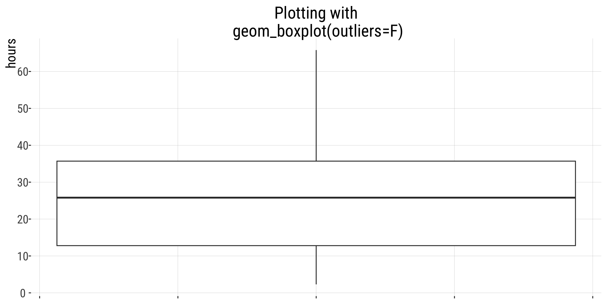
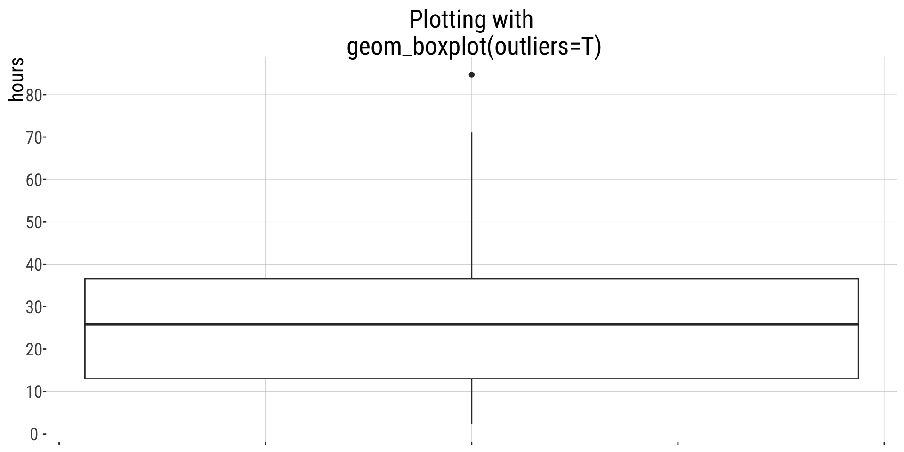
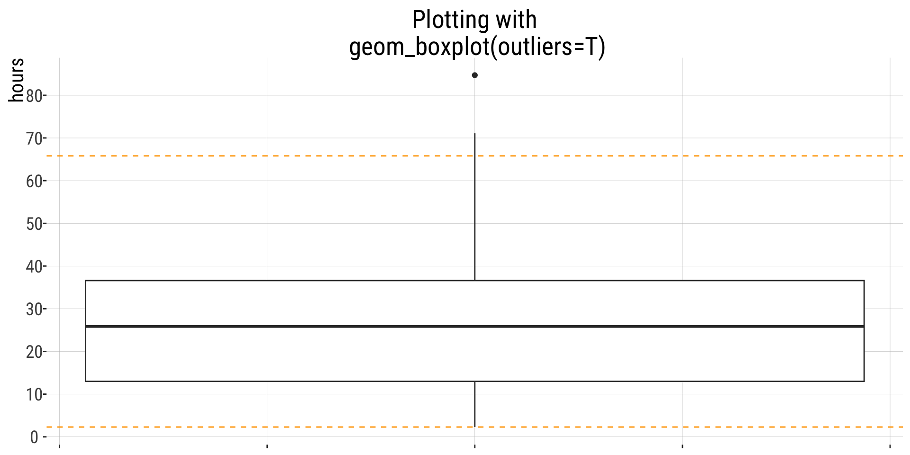

Min. 1st Qu. Median Mean 3rd Qu. Max.
2.30 12.80 25.80 27.85 35.70 84.70 2.4.Data Visualization
Relationships between variables
September 16, 2026
Cumulative Frequency Distributions
Lifespan of bees (in hours).
-
summary()gives you three percentiles: 25, 50, and 75%. -
quantile()gives you-quantiles
All the quantiles of a numerical variable can be displayed by graphing the cumulative frequency distribution.
Case 1: If there are no outliers in the dataset
R uses the popular method of
and
.
If there are no values beyond these limits, it considers the dataset to not have outliers for the purposes of a boxplot. Whiskers go down to min and up to max value, i.e, the range.
E.g. for the bees:
[1] 2.3 84.7[1] -21.55[1] 70.05
Case 2: there are outliers
If there are outliers, whiskers go up to and down to
and outliers are shown as circles

Case 2: there are outliers
If there are outliers, whiskers go up to and down to
and outliers are shown as circles
